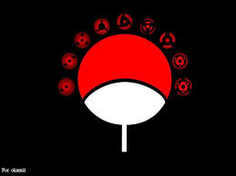

The Uchiha Clan: Legacy, Power, and Tragedy
The Uchiha Clan stands as one of the most iconic and enigmatic families in the shinobi world of Naruto.
Renowned for their exceptional talent, powerful abilities, and tragic history, the Uchiha Clan has left
an indelible mark on the narrative of both the Naruto series and its fans worldwide.
The history of the Uchiha Clan is steeped in legend and lore. Hailing from the Hidden Leaf Village
(Konohagakure), they were known for their prowess in battle and their unique ability: the Sharingan.
This special doujutsu, or eye technique, granted its wielders heightened perception, the ability to see
chakra, and eventually evolved into even more powerful forms, such as the Mangekyo Sharingan and the
Rinnegan.
Certainly! The Uchiha clan, a prominent family in the Naruto series known for their powerful Sharingan
abilities, faced tragic losses primarily due to internal conflicts and external threats. Here are some
of the main members of the Uchiha clan who were killed and the circumstances surrounding their deaths:
Shisui Uchiha:
Shisui was a highly skilled shinobi known as "Shisui of the Body Flicker
ding" due to his incredible speed. He was renowned for his mastery of the Kotoamatsukami genjutsu.
Shisui's death was shrouded in mystery for a time, but it was eventually revealed that he committed
suicide by using his Mangekyo Sharingan to entrust his remaining eye to Itachi Uchiha, his close friend
and fellow clan member. Shisui's death played a significant role in the events leading up to the Uchiha
clan massacre.
Itachi Uchiha:
Itachi was a prodigy of the Uchiha clan and possessed the Mangekyo Sharingan, allowing him access to
powerful techniques like Amaterasu and Tsukuyomi. Due to his advanced skills, he was tasked by Konoha's
leadership to infiltrate the Uchiha clan and prevent a coup d'état they were planning. Reluctantly,
Itachi chose to wipe out his entire clan, sparing only his younger brother, Sasuke Uchiha. His actions
were driven by a sense of duty and love for his brother, though they left deep scars on Sasuke and the
Naruto storyline as a whole.
Fugaku Uchiha and Mikoto Uchiha:
Fugaku and Mikoto were the parents of Sasuke and Itachi. Fugaku was the clan head and a strong advocate
for Uchiha's rights within Konoha. Both Fugaku and Mikoto were killed by Itachi during the massacre.
Their deaths were a tragic consequence of Itachi's mission and the political tensions within the
village.
These deaths were pivotal moments in the Naruto series, shaping the characters' motivations and the
course of the story's narrative, particularly Sasuke's journey of revenge and redemption.
NAME
Sarthak
Email
sarthakganda012@gmail.com